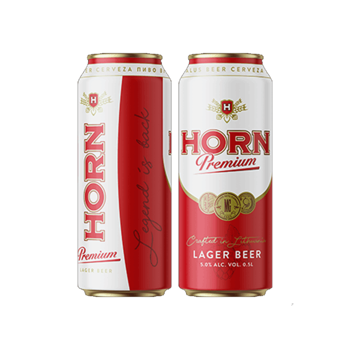
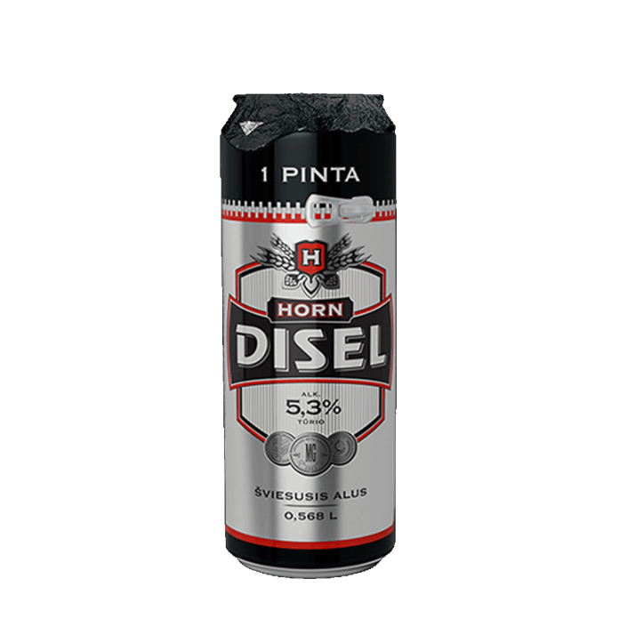

666
HORN DISEL
ABV: 6.0%
HornDisel„666“ is a dark mahogany coloured beer, distinguished by its roasted malt, caramel and dark bread aroma. Well expressed sweet malt taste with a light chocolate aftertaste.
Tested and well liked by consumer.

PREMIUM
HORN PREMIUM
ABV: 5.0%
The legendary HORN with Premium beer has returned.
Horn „Premium“ is the pale ale of „lager“ type produced from barley malt, hops, beer yeast and fresh water. A combination of delicate bitterness and expressive hop aroma.

HORN DISEL
ABV: 5.3%
Horn Disel light lager beer with a light but rich taste. Made from barley malt, hops, brewer's yeast and fresh water. Perfect for real men.